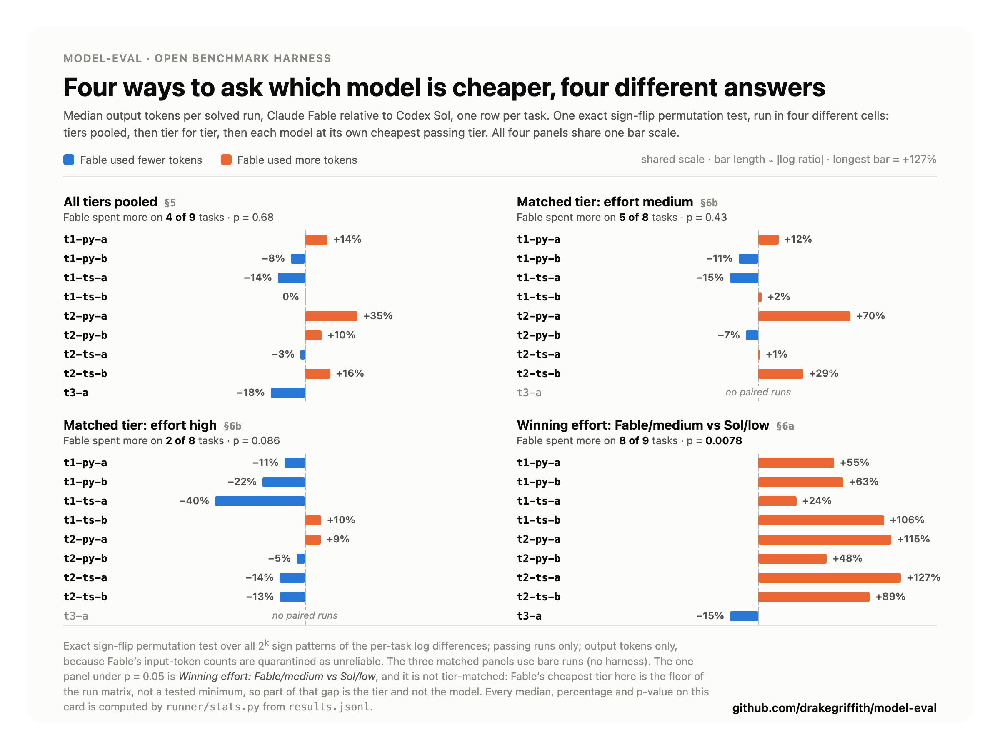

August 3, 2026
Every number below traces to the verbatim output of the repo's own stats script
(python3 runner/stats.py) over the live corpus: 268 result rows, 267
after exclusions, 154 dual-judged rows, 241 transcripts. Section references like
"§5" point into that output, which is checked into the repo as
deliverables/STATS-CURRENT-2026-08-03.md. Nothing here is a number I
typed in by hand.
Repo: github.com/drakegriffith/model-eval
Every benchmark I could find for "is model A better than model B at coding" gave me a leaderboard number and nothing to check it against. No transcript, no grading rubric, no way to tell whether the task was actually hard or just phrased to favor one vendor's house style. I wanted something I could point at my own tasks, run against whatever CLI I already had subscription access to (Claude Code, Codex), and get back not just a score but the receipts.
model-eval is that harness. It runs a model headlessly against a small, verifiable coding task, scores the result with two independent LLM judges on a shared rubric, and writes the transcript, the judgment, and the raw token counts to the same repo the code lives in. Nothing about a run's outcome depends on a number I typed in by hand afterward.
A task is a directory: a starting repo state with a real bug or a real missing
feature, a verify.sh that fails against the unpatched state and passes
against a reference fix, and a prompt handed to the model verbatim. The model gets
the repo and the prompt, runs headlessly to completion, and verify.sh
either passes or it doesn't. That's the only pass/fail signal in the corpus. No
judge ever overrides a failing test suite.
Two things back that up:
selftest.sh on every task. Each task proves,
offline, that its own verify.sh fails on the unpatched base and passes
once the reference patch is applied. A task that doesn't wire up cleanly fails CI,
not silently skipped.passed: false. The grader isn't rubber-stamping.
Runs are unattended, which means --dangerously-skip-permissions /
--dangerously-bypass-approvals-and-sandbox on the CLI side. That's a
real reduction in the CLI's own safety net, so an OS-level sandbox-exec
profile and a process-level containment layer sit underneath every invocation
instead: deny-by-default on credential reads, writes contained to the run's own
scratch tree, API keys popped from the child's environment so every run is
subscription-authenticated, never key-authenticated. Full detail in the README's
security section.
Once a run finishes, two separate LLM judges (one Claude, one Codex) score the diff independently on four dimensions (correctness, simplicity, idiomatic style, spec adherence) without seeing each other's verdict.
Across the 267 scorable runs in the current corpus, every model passed every task it attempted. 100%. Sol, Fable, Kimi K3, GPT-5.6 Luna, GPT-5.3 Codex Spark, both Claude Haiku 4.5 snapshots, all of it. (There are 268 rows on disk. One is excluded as a CLI error: the process died before the model got a fair attempt, so its result was never earned either way. Exclusions are printed with their counts at the top of the stats output rather than being silently dropped.)
That's not a claim that these models are equivalent. It's a ceiling effect: the task set (bug fixes and small feature additions in real repos, the kind of thing t1/t2-tier tasks in this corpus cover) is easy enough for current frontier and near-frontier models that pass/fail no longer separates them. If I want a benchmark that still discriminates as models get better, either the tasks get harder or I stop treating pass/fail as the metric that matters. For this corpus, I did the second one: the real signal turned out to be cost and judged quality, not whether the test suite went green.

With pass/fail saturated, cost is the obvious next axis. Comparing Claude's Fable against Codex's Sol on the 9 tasks both models solved, taking each model's median output tokens per solved run on each task (§5):
| task | Fable | Sol | Fable vs Sol |
|---|---|---|---|
| t1-py-a | 1,120 | 984 | +14% |
| t1-py-b | 1,074 | 1,164 | -8% |
| t1-ts-a | 994 | 1,162 | -14% |
| t1-ts-b | 1,719 | 1,719 | 0% |
| t2-py-a | 2,420 | 1,790 | +35% |
| t2-py-b | 2,862 | 2,600 | +10% |
| t2-ts-a | 3,210 | 3,293 | -3% |
| t2-ts-b | 2,679 | 2,318 | +16% |
| t3-a | 2,461 | 3,013 | -18% |
Five tasks lean one way, four lean the other, and the largest gap in the set is 35%. Run the exact sign-flip permutation test over the per-task log differences and 348 of the 512 possible sign patterns are as-or-more extreme than the one observed: two-sided p = 0.68. There is no detectable cost difference between these two models on this corpus, in either direction.
The careful phrasing is deliberate. "No detectable difference" is not "they cost the same." Nine paired tasks is a coarse instrument: the smallest two-sided p this test can even produce is 0.004, and that requires all nine tasks pointing the same way. A five-four split lands where this one landed no matter how large the underlying difference is. A real gap could be sitting under this table, unresolvable at n=9. What I can say is that nothing in this data supports choosing between these two models to save tokens.
Two scoping notes. First, the axis is output tokens only. Fable's
input-token counts are quarantined as unreliable on all 64 of its rows while Sol's
are measured on all 112, so a total-token contrast would put an undercount against a
true count and manufacture a gap out of a measurement artifact. Second, that table
pools every passing run of each model across the effort tiers each was run at: Sol's
pool spans low through ultra, Fable's covers
medium and high. Tier does move token spend, as Finding 3
shows, so it's a model-level contrast and not a matched-tier one.
When I first drafted this section, the matched version wasn't in
stats.py and I wasn't going to quote a number for it off a spreadsheet
I'd done by hand. It's in the script now, as §6, and it earns its own
paragraphs because it doesn't just repeat §5.
Take a literally matched tier first: same effort label, both models, bare runs only.
At medium, Fable spends more on 5 of the 8 shared tasks, p = 0.43. At
high, it spends less on 6 of 8, p = 0.086. Two tiers, opposite signs,
neither resolvable at n=8. The pooled answer survives the control.
The one contrast that does come back significant is the pair of cells §2 uses
for pass/fail: each model at its own winning effort. That's Fable at
medium against Sol at low, and there Fable spends more on 8
of 9 tasks, only 4 of the 512 sign patterns are as-or-more extreme, p = 0.008. Read
the cell names before you read the p-value. Because effort never flipped an outcome
(Finding 3), "winning effort" collapses to "cheapest tier this model was run at", so
this compares a medium-tier configuration against a low-tier one and some unknown
part of the gap is the tier rather than the model. It's also not a symmetric matrix:
Sol was run at five tiers starting at low, Fable at two starting at
medium. Fable's cheapest passing configuration here is
medium because medium is the floor of the run matrix, not
because anything tested a lower one.
So: no claim that either model is inherently cheaper survives the matched-tier test,
in either direction. What does survive is narrower and more useful. If you're
picking a configuration to deploy on work in this difficulty band, Sol at
low is the cheapest thing in this corpus that passes everything, and it
does it at roughly a 1.6x output-token advantage over Fable at medium
(geometric mean across the 9 shared tasks). Whether Fable at some lower tier would
close that gap is a run I haven't done.
Every model in this corpus exposes an "effort" knob (low/medium/high, or similar), and the working assumption going in was that higher effort should mean better outcomes. This is the one claim in the post where the corpus is unambiguous, because it's a claim about matched pairs rather than an average.
§3 walks every adjacent pair of effort rungs, per model, matching runs by task and repetition so task difficulty cancels out: Haiku 4.5 and its pinned snapshot, Fable, Codex Spark, Luna, Kimi K3, and Sol's full five-rung ladder. That's 15 comparisons over 144 matched pairs. Across all of them, the number of discordant pairs, meaning a task that passed at one effort tier and failed at the adjacent one, is zero. Not "rarely," not "not statistically significant." Zero, everywhere, for every model. The same holds for the two other paired contrasts in the file: Fable against Sol at their best tiers (§2, 25 pairs) and bare against harnessed invocation (§4, 27 pairs). Nothing in this corpus, turned in either direction, ever moved a run across the pass/fail line.
What the knob did move is spend. Median output tokens per solved run, bare invocation:
| model | low | medium | high | xhigh | max/ultra |
|---|---|---|---|---|---|
| Sol | 1,123 | 1,533 | 1,992 | 2,707 | 4,942 (ultra) |
| GPT-5.6 Luna | 1,551 | 2,873 | 5,249 (max) | ||
| GPT-5.3 Codex Spark | 2,308 | 3,529 | 4,250 | ||
| Kimi K3 | 1,384 | 1,630 | 1,971 (max) | ||
| Fable | 1,737 | 2,008 | |||
| Claude Haiku 4.5 | 2,860 | 2,674 | 2,745 (max) | ||
| Claude Haiku 4.5 (pinned) | 5,227 | 5,757 | 4,840 (max) |
Sol's ultra costs about 4.4x its low, and Luna's
max about 3.4x its low, for zero additional passing runs.
Kimi climbs gently. Both Haiku rows are non-monotonic, and neither one has
low as its cheapest tier, which is a good reminder that the knob's name
is a promise about intent and not a guarantee about behavior. (These medians are
descriptive, not a hypothesis test. They use the same output-tokens-only axis as
everything else here.)
The honest limit on this finding is the same ceiling effect from Finding 1. Effort can't buy a pass on a task that already passes at the lowest tier. What this corpus establishes is that on tasks in this difficulty band, the knob is pure cost. Whether it earns its price on harder tasks is exactly the question the corpus can't answer yet, and it's the strongest argument for making the task set harder before running anything else.
Pass/fail is binary and, on this corpus, saturated. The judges are where the finer-grained signal lives: correctness, simplicity, idiomatic style, and spec adherence, each scored 0-10 by two separately-prompted judges (Claude and Codex) that never see each other's output.
Before trusting either judge's score, I checked whether they agree. Averaging each judge's four dimension scores into one per-run number and comparing those, the two judges land within a point of each other on 95.7% of the 139 runs both judges scored. Looking at the four dimensions individually instead of the per-run average, agreement is tighter but still solid at 93.2% (518 of 556 judge-pairs within 1 point). Exact score matches are rarer (about 15% at the per-run level). The judges converge on the same rough quality tier far more often than they converge on the exact same integer, which is what I'd expect from two independently-prompted graders and not a sign that one of them is noise.
With that agreement established, average judged scores (both judges, all four dimensions) for the two models with enough judged runs to be worth reading:
| model | correctness | simplicity | idiomatic | spec | n |
|---|---|---|---|---|---|
| Sol | 9.33 | 9.06 | 8.93 | 9.55 | 80 |
| Fable | 8.83 | 8.83 | 8.54 | 8.96 | 57 |
Sol scores slightly higher across all four dimensions in this corpus, by about half a point on a 0-10 scale. Put next to Finding 2, that's the only axis on which the two models separate at all here: identical pass rates, no detectable cost difference at matched tiers, and a small judged-quality edge to Sol. Half a point is also inside the judges' own mean disagreement with each other (0.53 points, §7), so I'd treat it as a hint about where to look next rather than a result. It's a smaller and duller claim than "model X is better," and it's the one this data actually carries.
Not every run's token count came from a clean, direct measurement. Of 268 runs, 148
have tokens_in_status: measured (read directly off the CLI's own usage
reporting), 56 are recovered_in_ledger (reconstructed from a secondary
usage log after the primary read was incomplete), and 64 are
quarantined, flagged as unreliable. The quarantine is not scattered
randomly: it's all 64 of Fable's rows, every one of them, while all 112 of Sol's are
measured. There is no trustworthy input-token number for Fable anywhere in this
corpus.
That's why every token figure in this post is output tokens only. It's a known rough edge in how different CLIs report usage over long headless sessions, not a hidden one, and the field exists specifically so a bad read fails loud in the data rather than quietly averaging into a number that looks trustworthy. The next section is what happens when you ignore it.
The first version of this post led with a much better headline: same pass rate, about a fifth of the tokens, p = 0.004. Sol used more tokens than Fable on all 9 of 9 matched tasks. It was a great chart. It was also wrong, and it was wrong in the specific way this whole project exists to catch.
I had computed cost as tokens_in + tokens_out, which is the obvious
definition and the wrong one here, because Fable's tokens_in is
quarantined on 100% of its rows. I was comparing Fable's undercounted total against
Sol's complete one and reading the measurement gap as a performance gap. Worse, the
repo's own stats script had already been corrected for exactly this reason days
earlier, on 2026-07-30, and states the output-tokens-only rule in a comment. I
didn't run it. I recomputed the numbers by hand instead, and my hand-rolled version
quietly reintroduced the bug the script had been fixed to prevent.
Run the script and the flagship finding evaporates: p = 0.68, direction mixed, nothing detectable. That's Finding 2 above.
I'm leaving this in the post rather than quietly fixing the numbers, for two
reasons. The first is that a benchmark asking you to trust its methodology should
show you the time its methodology caught the author. The second is that the failure
mode generalizes past me: a number that is 4.8x and p = 0.004 and confirms something
you already half-believed is exactly the number that doesn't get a second look. The
wrong chart is still in the repo under
assets/model-eval-token-chart-WRONG-DO-NOT-USE.png, and it looks
completely convincing, which is the point.
No UI, no signup, no API key required for the smoke test:
git clone https://github.com/drakegriffith/model-eval cd model-eval # offline: proves the task is real by showing verify.sh # fail, then pass, once the reference fix is applied bash tasks/t1-py-a/selftest.sh # exercises the full harness pipeline, no tokens spent, # no API key needed python3 runner/run.py --mock --limit 1
Point runner/run.py at your own Claude Code or Codex CLI (subscription
auth, no key needed) to run a live model against a task and see how it does.
CONTRIBUTING.md covers adding a new task or a new model to the registry.
Repo: github.com/drakegriffith/model-eval